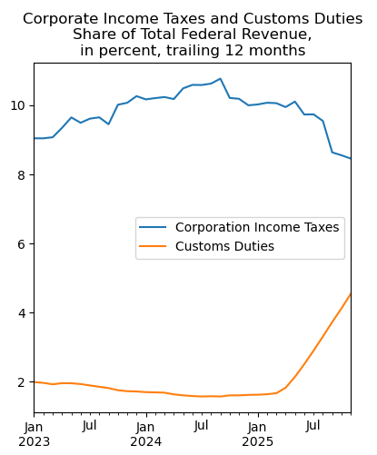

US Treasury Fiscal Data API with Python
The US Treasury Fiscal Data API offers data on federal finances, including revenue, spending, debt, and more. With Python, you can retrieve and analyze this data programmatically.
This example uses the Python requests and pandas packages to retrieve treasury data from the Monthly Treasury Statement and analyze federal revenue composition.
Background
Treasury Fiscal Data
The Bureau of the Fiscal Service provides public access to federal financial data through fiscaldata.treasury.gov. The API allows access to datasets including the Monthly Treasury Statement, Daily Treasury Statement, debt data, and more.
API
The Fiscal Data API is a RESTful API that returns JSON data. You can filter results, specify date ranges, and paginate through large datasets. No registration or API key is required.
Example: Federal Revenue by Type
Import packages
In[1]:
import requests
import pandas as pdRequest data from the API
Let's look at government revenue by type, from table 9 of the Monthly Treasury Statement (MTS). We want to see the share of federal revenue coming from corporate income taxes and customs duties since 2023.
We use the filter parameter to request only the categories of interest. The line description from the original MTS table has two lines for "Total"—one for receipts and one for outlays—so we'll need to remove the outlays data in the next step.
In[2]:
url = 'https://api.fiscaldata.treasury.gov/services/api/fiscal_service'
endpt = '/v1/accounting/mts/mts_table_9'
param = '?filter=classification_desc:in:(Corporation Income Taxes,Customs Duties,Total)&page[size]=800'
r = requests.get(f'{url}{endpt}{param}')Clean and transform the data
Next, clean up the results and rename the variables. Remove data related to line 33, which is total outlays. Convert the dates to datetime format and calculate the 12-month rolling sum.
In[3]:
rn = {'current_month_rcpt_outly_amt': 'Value', 'src_line_nbr': 'Line',
'classification_desc': 'Category'}
df = pd.DataFrame(r.json()['data']).rename(rn, axis=1).query('Line != "33"')
df['Date'] = pd.to_datetime(df['record_date'])
df = df.sort_index()
df = df.set_index(['Category', 'Date'])
data = (df['Value'].unstack().T.astype('float') / 1_000_000).rolling(12).sum().dropna()Plot the results
Create a plot showing the recent data, from 2023 onward. We calculate each category as a share of total federal revenue.
In[4]:
# Calculate the share of total
c = ['Corporation Income Taxes', 'Customs Duties']
res = (data[c].divide(data['Total'], axis=0) * 100)
res.index.name = ''
res.columns.name = ''
title = ('Corporate Income Taxes and Customs Duties\n'+
'Share of Total Federal Revenue,\n'+
'in percent, trailing 12 months')
res.loc['2023-01-01':].plot(title=title, figsize=(4.5,5))Out[4]:
Summary
The Treasury Fiscal Data API provides straightforward access to federal finance data. In this example, we retrieved monthly revenue data, calculated trailing 12-month totals, and visualized how corporate income taxes and customs duties have changed as a share of total federal revenue. The API offers many other datasets covering debt, spending, interest rates, and more.